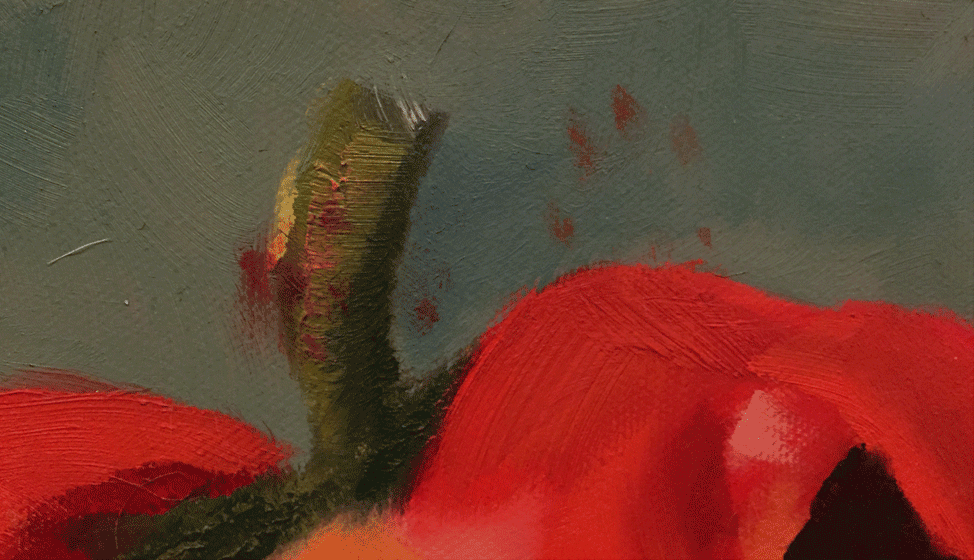

Oil on canvas
8" x 16"
One of the more special pieces in my vegetable series. The last day I worked on this piece, we had a bit of a start. I came home to find my husband concerned that our cat was bleeding from his foot... only to discover he had walked across my drying canvas. He was no worse for the wear, and I could not cover up his tiny red paw prints (below) to finish the piece, so it sits unfinished, as a tribute to Moose.
